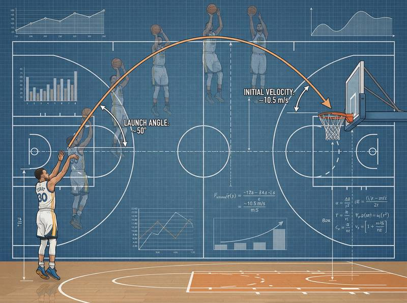
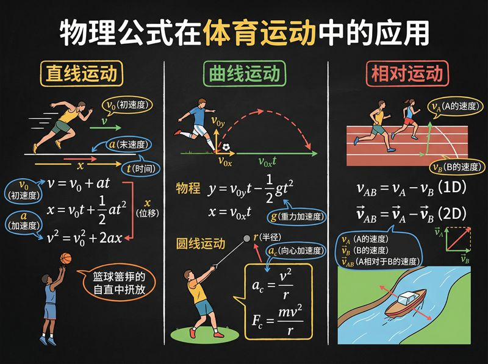

返回课程列表
第三课
运动学
跑跳投中的轨迹、速度与加速度
⏱️ 约50分钟
运动学是描述运动的几何学。在田径场上，百米冲刺的速度曲线、标枪的飞行轨迹、跳远的抛物线——都可以用运动学精确描述。
短跑的速度分析
百米短跑可分为起跑加速、途中跑和冲刺三个阶段。博尔特的最高速度达到12.2m/s（44km/h），加速阶段约占前60米。

百米飞人的运动学数据
世界级短跑运动员的运动学特征：
- 起跑反应时间：约0.12-0.16秒，低于0.1秒判为抢跑
- 加速阶段：0-60米持续加速，最大加速度约4m/s²
- 最高速度：约12m/s，出现在60-80米处
- 减速阶段：最后20米速度略有下降，维持速度是关键
投掷运动的抛体分析
铅球、标枪、铁饼出手后都做抛体运动。最优出手角度取决于出手高度和空气阻力。铅球的最佳出手角度约为40-42°而非理论的45°。

投掷项目的轨迹优化
不同投掷项目的运动学特点：
- 铅球：出手速度约14m/s，最佳角度40-42°（因出手点高于落地点）
- 标枪：空气动力学影响大，最佳出手角度约30-36°
- 铁饼：旋转产生升力，最佳出手角度约35-40°
- 链球：旋转半径越大速度越快，出手速度可达30m/s